Видеоигры по миру Forgotten Realms
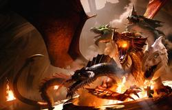
Брошенный в воду камень вызывает круги, а от тех расходятся волны. Этот принцип работает и в массовой культуре. В 1974 году компания Tactical Studies Rules, Inc. выпустила настольную ролевую игру Dungeons & Dragons, разработанную Гэри Гайгэксом и Дэйвом Арнесоном. D&D стала «камнем», чьи «круги» породили другие «волны». Так появились Ravenloft, DragonLance и другие вселенные, десятки книг, настолок, видеоигр и даже несколько экранизаций.
Но крупнейшей «волной» D&D нужно назвать творение канадского писателя и игрового разработчика Эда Гринвуда — вселенную Forgotten Realms. В нашей статье мы расскажем о воплощениях этого мира в видеоиграх.
Круги на воде
Эд Гринвуд, создатель Королевств, напоминает своего персонажа — мага Эльминстера (Фото: John LaSala / Wikipedia, GFDL)
Гринвуд придумал Забытые королевства ещё до появления D&D. Но ролевое сообщество узнало о них лишь в 1987-м, когда Эд продал права на них издательству TSR, Inc. Две книжки и четыре карты, разработанные Гринвудом, Джеффом Грабом и Кареном Мортином, положили начало невероятной, увлекательной и поистине масштабной вселенной, включающей множество необычных мест и существ.
Успеху помогла и книжная серия по вселенной, которая насчитывает уже почти 230 произведений от десятков писателей, показавших Забытые королевства с самых разных сторон. Нашлось место и восточной экзотике, и азиатской демонологии, и скандинавским мотивам. Именно для этой серии писатель Роберт Сальваторе создал одного из известнейших персонажей фэнтези — тёмного эльфа Дриззта До’Урдена. Книги о нём входили в списки бестселлеров New York Times так часто, что можно смело утверждать: именно романы Сальваторе подарили идеям Гринвуда широкую популярность. До сих пор многие знают о вселенной именно по книгам, а не по настольным ролевым играм.
Символом Королевств стал не только До’Урден, но и вся раса дроу, а вместе с ними и Подземье. Мрачную систему пещер под Королевствами населяют самые необычные существа. Если на поверхности живут в основном типичные для фэнтези эльфы и орки, то в Подземье можно встретить иллитидов, похожих на Ктулху, и бихолдеров — летающих созданий с гигантскими глазами и зубастой пастью. Бихолдеры, придуманные лично Гэри Гайгэксом вместе с художником Китом Паркинсоном, изначально не имели аналогов в других вселенных, но затем их растащили по разным мирам вроде Might and Magic и Warhammer. Такова цена популярности.
Узнаваемыми Королевства сделали не только они, но и множество иных существ, героев и событий: чудовищная тараска, демоноподобные тифлинги, мудрый маг Эльминстер, неоднозначный убийца Артемис Энтрери… Королевства — поистине богатый мир.
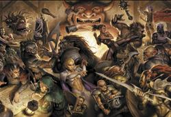
Все живые символы Королевств в одной картинке Тодда Локвуда
Первое поколение игр
Судьбой было предначертано, чтобы Королевства воплотились в видеоиграх почти сразу после своего появления. Итак, на дворе 1988-й год, астрологи объявляют начало золотого века ролевых игр, а на рынок выходит Pool of Radiance.
Игра произвела фурор. Она стала первым виртуальным воплощением расширенной версии D&D (AD&D). Здесь было всё как на столе. И партия на шесть героев — каждый со своим мировоззрением. И схватки с чудовищами, сошедшими со страниц Monster Manual. И эпический сюжет, который вёл храбрецов от руин города Флэн на берегу Лунного моря до убежища древнего дракона, одержимого Тирантраксусом — служителем злобного бога Бэйна. И роскошная атмосфера, и обилие интересных деталей — например, сплетни в тавернах, подсказывающие путь к новым тайнам и опасностям. Это принесло PoR титул лучшей фантастической игры 1988 года. Современные критики, кстати, отмечают, что проект актуален до сих пор.
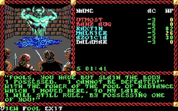
Pool of Radiance: первая игра по Королевствам
Всего через год вышла Curse of the Azure Bonds — продолжение Pool of Radiance и одновременно книжной трилогии Кейт Новак и Джеффа Грабба «Путеводный камень», чьи герои появились в игре. Сюжет рассказывал о колдовских печатях, наложенных на героев вскоре после победы на Тирантраксусом. На пути к освобождению от них стояли воровские кланы, маг из зловещего Тэя, тёмные жрецы и штормовой гигант в глубинах Миф Драннора — столицы Кормантира.
Curse of the Azure Bonds позаимствовала игровой процесс у Pool of Radiance, развив его в лучшую сторону и связав с сюжетом. Наложенное на героев проклятье не было абстрактной причиной отправить приключенцев к баатезу на куличики — оно влияло на механику игры. Скажем, из-за печати Зентила отряд выглядел в глазах жителей Хиллсфара сворой мерзавцев, ждущих отправки к праотцам. «Проклятие» было тепло принято и игроками, и критиками, как, впрочем, и многие игры по Забытым королевствам. Очень уж хорошо проработанным оказался сеттинг.
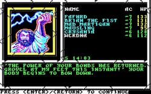
В Curse of the Azure Bonds персонажам можно прописать свои имена. Если верить этому скриншоту, в отряд входят герои Фрица Лейбера, Dragonlance, «Уиллоу» и Bard’s Tale
Третья игра послала героев в подземелья под Вотердипом, одним из крупнейших городов Королевств. Выполненная в популярном тогда жанре «исследование подземелий», Eye of the Beholder предлагала игрокам отправиться в двенадцатиуровневый лабиринт, собравший в себе весь цвет D&D-бестиария, включая народных любимцев — дроу и бихолдеров.
По сравнению с Pool of Radiance игра не стала откровением. Но и в ней были любопытные механики вроде особых заданий для каждого уровня лабиринта — их выполнение сулило достойные призы.
К сожалению, Eye of the Beholder оставалась последним достойным проектом по Забытым королевствам вплоть до 1997 года. За это время каждый из миров D&D, будь то Mystara, Ravenloft, Dark Sun, DragonLance или Spelljammer, тоже обзавёлся парочкой игр по мотивам. Всколыхнуть интерес к Забытым королевствам удалось лишь тогда, когда на трон бога убийц Баала посягнул дерзкий смертный.
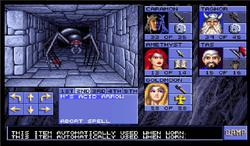
Eye of the Beholder и фирменные паучки из Подземья
Baldur’s Gate
В 1989 году свет увидела книжная серия «Аватары», рассказывающая о глобальной катастрофе в Королевствах — кризисе Аватар. Он начался, когда трое злых богов — Баал, Бэйн и Миркул — украли у верховного бога Ао Скрижали Судьбы. За это Ао сбросил всех младших богов на землю в телах смертных. Виновники, как и многие другие боги, этого не пережили.
На этом эпизоде основана серия культовых игр Baldur’s Gate. Разработали её в студии BioWare (в наши дни известна по Mass Effect и Dragon Age) и Black Isle (создатели культовой серии Fallout), а одним из сценаристов был известный писатель Дрю Карпишин. По сюжету игры Баал оставил множество потомков, чья кровь давала им права на трон. Герой Baldur’s Gate — один из наследников бога. Ему предстоит великое странствие по Побережью Мечей через Врата Балдура и Амн, через самые тёмные уголки Фаэруна, через планы и подмиры к ступеням трона Баала.
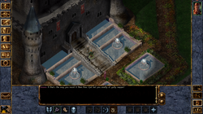
Мирный Кэндлкип в Baldur’s Gate (1998). Здесь всё начиналось
Серия Baldur’s Gate, включающая две игры с крупными аддонами, стала культовой по множеству причин. Её ролевая система совмещала продвинутую AD&D с наследием Ultima, Diablo и Fallout. Героев заносило не только в два крупнейших города Побережья Мечей, но и в такие яркие места, как Подземье и библиотека Кэндлкип. Бои радовали тактическим разнообразием, а бестиарий поражал воображение. Иллитиды, дроу, созерцатели, великаны, гоблины, древние драконы и даже демилич с принцем демонов — здесь можно было найти на свою голову проблемы любой степени зубастости. BG включала множество ярких элементов Королевств, с каждым годом обрастающих всё новыми и новыми деталями. В том, что касается проработки мира, творение Эда Гринвуда вплотную подошло к произведениям таких мастеров, как Скотт Бэккер и Джон Толкин.
Эд Гринвуд консультировал авторов сценария и помог сделать атмосферу Королевств такой убедительной, что после пары часов странствий игроку мерещился в тёмной комнате Дриззт До’Урден, а в любом учителе виделся стриженый Эльминстер в штатском. Воровские гильдии, вампирские культы, Арфисты, городские легенды, дрязги правителей подводного города — BioWare наполнили сюжет таким количеством организаций, личностей и памятных событий, что этого хватило бы на десяток игр по мотивам Королевств.
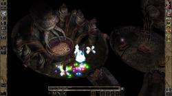
Город иллитидов в Подземье и его владыка (Baldur’s Gate 2)
Но главным козырем игры стали невероятно проработанные персонажи. Добродушный громила Минск с ручным «космическим» хомяком Бу, милашка-воровка Имоен, очаровательно циничный волшебник-мизантроп Эдвин, праведный рыцарь Келдорн, femme fatale из расы дроу Викония ДеВир, сводящая с ума развратным голосом, паучьей красотой и чёрным юмором… Об этих персонажах сейчас вспоминают с тёплой ностальгией, как о давних друзьях по совместным приключениям.
Эти лица для бывалых игроков стали родными
Их были десятки. Все они несли своё бремя. Рассказывали свою историю. Отстаивали свою позицию, готовые биться за неё насмерть. Все они навсегда остались в душе игрока, который видел в них уже не набор пикселей, но братьев, сестёр, товарищей и избранниц.
При этом судьбы персонажей зависели от игрока. Он мог выбрать, как с ними поступить, и увидеть последствия своего решения. Благодаря всему этому игрок так глубоко погружался в происходящее, что спутники становились его настоящими друзьями, а роману с вымышленной героиней он радовался как исполнению самого сокровенного желания. И, стоя пред троном Баала, человек оглядывался на них. Что он видел: осуждение Келдорна? Страстную поддержку Виконии? Своего ребёнка в руках хрупкой Эйри? От этого зависел его выбор, ведь их нельзя было подвести.
Эти эмоции — основа Baldur’s Gate, без которой серия не стала бы культовой и самой душевной среди всех игр по D&D.

Потрясающие мрачные подземелья Baldur’s Gate 2
Icewind Dale
Дилогия Icewind Dale, разработанная той же Black Isle Studios без участия BioWare, поначалу казалась упрощённой версией Baldur’s Gate. В этой игре не нашлось места ни эпическому сюжету, ни колоритным персонажам, ни глубокой эмоциональности. Даже убить опостылевшего Дриззта было нельзя. Но баатезу, как всегда, прятался в деталях.
Серию разработчики целиком посвятили Долине ледяного ветра, которую описал Роберт Сальваторе в одноимённой трилогии. Именно в этих книгах состоялся дебют известного дроу с пантерой. В Icewind Dale царила холодная, суровая и неприветливая атмосфера, характерная для северной части материка Фаэрун.
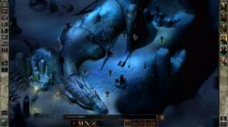
В Долине ледяного ветра льдом становится всё. Даже драконы
Простенькая история об очередных приспешниках зла служила лишь ширмой. Основой Icewind Dale были не разговоры и не пёстрый мир, а схватки с живыми и не очень представителями обширного бестиария. В этом Icewind Dale превосходила даже щедрую на необычных созданий Baldur’s Gate. Йети, юань-ти, демоны-марилиты, жукоподобные амбер халки, чудовищные многоножки реморхазы, а также драконы, великаны, гоблины — количество существ, желающих закопать авантюристов в ближайшем сугробе, радовало и ужасало одновременно. А ведь в масштабах Королевств вся долина с её разнообразной фауной — это всего лишь клочок промёрзшей земли.
Бесконечные заснеженные просторы в белосиних тонах и зацикленность на истреблении монстров создавали ощущение, что Icewind Dale скудна и однообразна. Но на самом деле она идеально воплощала образ Долины ледяного ветра с её скромным бытом, ордами зубастых врагов, своеобразным северным очарованием и маленькими отрядами приключенцев, делающими этот суровый край чуть безопаснее. Тех же игроков, кто искал погоды поспокойнее, народа подружелюбнее и монстров поменьше, ждал город-государство Невервинтер.
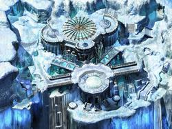
Пейзажи Долины зачаровывают
Planescape: Torment
В те же годы, что Baldur’s Gate и Icewind Dale, на том же движке Infinity и от того же разработчика Black Isle Studios вышла ещё одна культовая игра — Planescape: Torment. Её действие происходит не в Королевствах, а в смежной с ними мультивселенной Планов, так что формально игра не относится к теме статьи. Но как мы можем о ней не упомянуть? Ведь Planescape: Torment — это уникальная игра со сложным сюжетом и мощнейшим философским и морально-этическим подтекстом.
Сюжет игры посвящён Безымянному — загадочному бессмертному человеку (человеку ли?), который прожил множество жизней, но ничего о них не помнит. Покрытый шрамами и татуировками, этот нетипичный герой может следовать и доброму, и нейтральному, и злому пути с соответствующим финалом. Но каким бы ни был этот финал, игрок столкнётся с жестокой и поучительной историей об одном эгоистичном и трусливом существе, возжелавшем бессмертия.
Planescape привлекает не только историей, странными мирами и атмосферой, но и яркими спутниками героя, среди которых есть говорливый летающий череп и асексуальная суккуба. Непривычно и то, что игра базируется на диалогах, а не на битвах. Большинства драк можно избежать, сказав правильные слова Они же дают Безымянному возможность обрести ещё большее могущество, изменить чужие судьбы и привести игрока к мысли, что наша смертная жизнь — неплохая, в общем-то, штука.
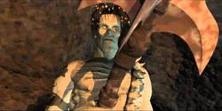
Neverwinter Nights
Игровая дилогия Neverwinter Nights достойна стоять на одной полке с Baldur’s Gate. Хотя и здесь есть нюансы. В первой части не было таких цепляющих за душу персонажей, как в BG, — одна лишь леди Арибет врезалась в память благодаря своей трагической истории. Мир уже не казался таким живым, ведь спутники не ругались, не комментировали всё вокруг и не стремились порезать кого-то за противоположную точку зрения. Завязка сюжета тоже не внушала доверия, так как слишком напоминала Pool of Radiance — юные авантюристы пришли на помощь городу, а закончилось это борьбой с почти вселенским злом.
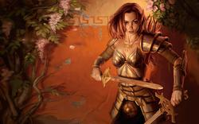
Полуэльфийка Арибет, самый запоминающийся персонаж Neverwinter Nights.
Но Neverwinter Nights с лихвой компенсировала это проработкой боёв, невиданной ранее среди AD&D-игр. Они не просто стали тактическими, а визуализировали классическую настольную партию, где игроки постоянно маневрировали и подстраивали окружение под себя. Основой проекта стала третья редакция правил, привнёсшая в игровой процесс множество механик.
К тому же сюжет позволил продемонстрировать редактор кампаний, прилагающийся к игре. Разработчики подарили игрокам инструментарий с безграничными возможностями для импровизации, воплотив мечту любителей настольных ролевок.
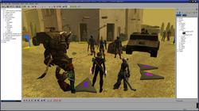
Редактор кампаний стал главным открытием Neverwinter Nights.
Neverwinter Nights 2 нарушила правило «оригинал всегда лучше продолжения». Она развила ключевые достоинства первой части, дополнив их лучшими чертами Baldur’s Gate и свежими задумками. Конструктор улучшили так сильно, что он актуален и по сей день. Сюжет подтянули до уровня BG, а местами и превзошли его. Ролевая и боевая системы стали едва ли не лучшими среди D&D-игр, ведь в их основу легла редакция 3.5 — самая почитаемая среди ролевиков.
Дилогия Neverwinter Nights со всеми её дополнениями дала ценителям ролевых игр невиданные возможности. Десятки классов, в том числе Танцор Теней и чернокнижник. Множество рас и подрас, таких как тифлинги, аазимары и чистокровные юань-ти. Изобилие мифов, легенд и их интерпретаций. Вольные отыгрывать как зло, так и добро, игроки могли спасать людей или грабить их. Могли стать владыками Ада с павшей Арибет по правую руку или творить добро по лекалам классического фэнтези. Могли строить отношения со спутниками, крутить романы и предавать соратников в лучших традициях Baldur’s Gate.
Сага о наследнике Баала подарила миру эталон атмосферного фэнтези. Истории Невервинтера показали, что такое истинное разнообразие, масштаб и потенциал. С годами всё это стало любовно хранимыми воспоминаниями. Однако закрывать эту веху игровой истории ещё рано. Шоу должно продолжаться.
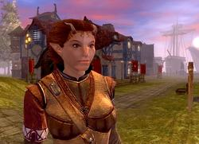
Обаятельная воровка-тифлинг Нишка — достойная замена Имоен из BG
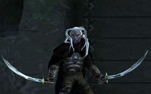
Между двумя частями Neverwinter Nights вышла не очень успешная action-RPG Demon Stone. Единственное, чем она запомнилась — возможностью недолго поиграть за Дриззта.
Neverwinter (MMORPG)
Серию подхватила Cryptic Studios, выпустившая в 2013 году многопользовательскую ролевую игру Neverwinter. Изначально она должна была плотно сплестись с книгами Сальваторе и серией Neverwinter Nights, но впоследствии проект стал самобытным и лишь косвенно пересекался с другими, хотя Сальваторе и принял в его разработке посильное участие.
По сюжету Невервинтер пал под натиском злобных орд — Первобытного Огненного Элементаля, сил Гонтлгрима и Колдовского мора. Самый цивилизованный и многонациональный город Фаэруна превратился в руины, а его жители перегрызлись. Тэйцы, нетерийцы и другие тёмные личности ополчились на утомлённых бесконечными дрязгами людей. Им требовалась помощь и чернокнижников, и убийц, и паладинов.
Neverwinter вызвал в ролевых кругах неоднозначные эмоции. Мир пестрел характерными чертами Королевств вроде дроу, ездовых пауков и тайного ордена Арфистов. Редактор The Foundry позволял дополнить игру собственноручно сделанными приключениями и даже мирами. Но использование непопулярной четвёртой редакции D&D публика приняла в штыки. Отполированную за годы ролевую систему возмутительно упростили, и фанаты не могли этого принять.
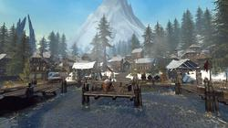
Долина ледяного ветра в современной графике Neverwinter
Хвала богам, разработчики прислушались к своей аудитории. Всего за два года они выпустили такое количество дополнений, что старая и новая Neverwinter отличаются как землеройка и тараска. Ролевая система расширилась за счёт новых элементов и рас. Приключений стало так много, что их хватило бы не на одну жизнь — впору было обращаться к алхимикам за зельем бессмертия.
Neverwinter затягивает не хуже своих славных предшественников. Мир Забытых королевств стал ещё полнее и многограннее. Появились новые области, среди которых были и хорошо забытые старые — например, уже знакомая Долина ледяного ветра, превосходящая красотой все свои прежние воплощения, в том числе и в игре Icewind Dale. Ряды врагов пополнились созданиями столь могучими, что даже демилич из Baldur’s Gate 2 в страхе забился бы в свой саркофаг. Сама богиня злых драконов Тиамат появилась недалеко от Невервинтера. Так близко, буквально на расстоянии удара мечом, с подобным тёмным божеством в виртуальной D&D мы ещё не оказывались.
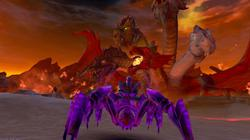
Многоглавая богиня-драконица Тиамат — одна из самых впечатляющих злодеек Neverwinter
Разработчики проделали огромный труд, превратив спорный проект в новое лицо прославленной фэнтези-вселенной. Cryptic Studios ждёт ещё много работы, но уже сейчас их Невервинтер вновь засиял, как подобает Жемчужине Севера. Да поможет им Гонд, бог ремёсел и изобретений!
{kind=link}


{kind=link}
{kind=link}